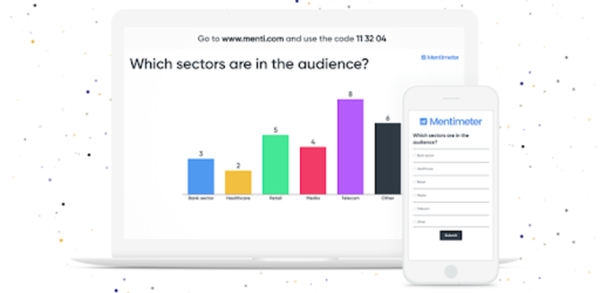
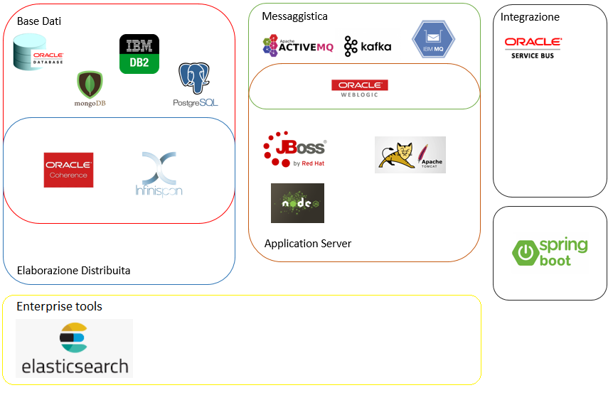

IT Notebook
The future belongs to those who believe in the beauty of their dreams.
The future belongs to those who believe in the beauty of their dreams.
Web application utile per sottomettere sondaggi e sessioni di domande e risposte live durante sessioni di workshop e/o presentazioni.

Mentimeter
Infografica che aggrega le diverse soluzioni tecnologiche adottate sui progetti svolti.

Lista di alcune tecniche di modellazione dei processi di business, utili in fase di analisi e produzione di documentazione dei progetti.
Estensione per Oracle SQL Developer e Oracle JDeveloper utile per decriptare le password salvate per database, server, etc.
Show Me Password
Dal sito docs.oracle.com sono disponibili i seguenti tutorials:
Basic:
Elenco delle principali piattaforme web testate per le seguenti tipologie di servizi:
Domino: